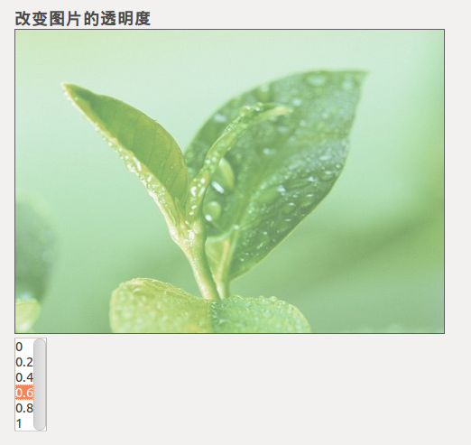

当你点击不同的透明值时，会改变图片的透明度
看看效果图
 查看演示 下载源码下面是js源代码：
function ChangeOpacity(x)
{
// 返回下拉列表中被选项目的文本
var opacity=x.options[x.selectedIndex].text;
// 通过Id属性获取要操作的元素
var pic=document.getElementById("pic");
if (pic.style.opacity!==undefined)
{pic.style.opacity=opacity;}
else
{alert("Your browser doesn't support this example!");}
}